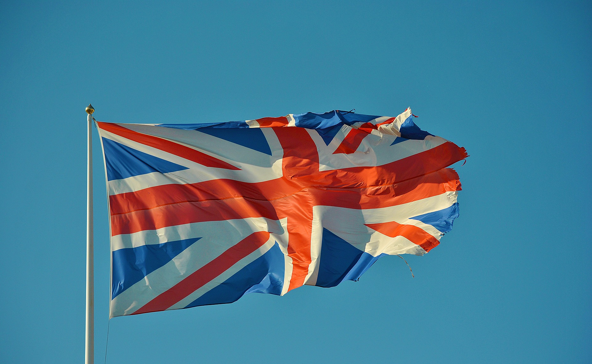

Великобрита́ния
Великобрита́ния (русское название от англ. Great Britain) или Соединённое Короле́вство (United Kingdom [jʊnaɪtɪd kɪŋdəm], сокращённо: UK)[4], полная официальная форма — Соединённое Королевство Великобрита́нии и Се́верной Ирла́ндии[4][1] (англ. The United Kingdom of Great Britain and Northern Ireland), — островное государство на северо-западе от континентальной Европы[5][4].
Единое Королевство Великобритания образовалось в 1707 году вследствие политического объединения королевств Шотландии и Англии; но ещё ранее, в 1603 году, король Шотландии Яков VI унаследовал престолы Англии и Ирландии в порядке личной унии (Яков I). В 1800 году Королевство Великобритания и Королевство Ирландия объединились, образовав Соединённое Королевство Великобритании и Ирландии, которое после отделения от него в 1922 году Ирландского Свободного государства стало именоваться Соединённым Королевством Великобритании и Северной Ирландии.
Великобритания — одно из крупнейших государств Европы, ядерная держава с 1952 года (признанная в соответствии с Договором о нераспространении ядерного оружия 1968 года), постоянный член Совета Безопасности ООН, бывшая метрополия Британской империи; британский монарх также является главой 15 иных независимых государств и главой Содружества.
Бывший центр мировой империи, Великобритания и сейчас играет важную роль в международных делах. Английский язык стал вторым языком во многих странах мира; он преобладает в Интернете и других международных средствах связи. Экономика Великобритании — девятая в мире; военный бюджет страны один из самых высоких в мире.
Форма правления — парламентарная монархия. Форма государственного устройства — квази-унитарное государство, где с конца XX века три из четырёх составляющих стран (Шотландия, Северная Ирландия, Уэльс) обладают правами ограниченной автономии.
Столица — город Лондон, один из крупнейших городов Европы и финансово-экономических центров мира.
Официальные языки: английский (де-факто), в Уэльсе — валлийский.

Этимология
Происхождение слова «Великий» в названии «Великобритания» Клавдий Птолемей в своем труде «Альмагест» (147—148 н. э.) называет больший остров «Большой Бретанией» (др.-греч. μεγάλης Βρεττανίας), а Ирландию называет «Малой Бретанией». В своей более поздней работе «География» (150 г. н. э.) он называет эти острова «Альвион», «Иверниа» и «Мона» (остров Мэн). Предполагают, что эти названия не были известны ему во время написания «Альмагеста». Название «Альбион», видимо, вышло из употребления через некоторое время после завоевания островов римлянами, и остров стали называть «Великобританией».
После англосаксонского периода название «Британия» стало упоминаться только как исторический термин. Джефри Монмауз в своём псевдоисторическом труде «История правления Британии» Великобританию называет «Большой Британнией» («Большая Британия»), которую отделяет от «Малой Британнии» («Меньшая Британия») — область в континентальной Европе, где селились кельтские переселенцы с Британских островов в V—VI веке. Название «Великобритания» впервые было использовано официально в 1474 году, в письме с предложением о браке между Сесили дочери Эдуарда IV из Англии и Джеймсом, сыном Джеймса III из Шотландии, в котором сказано «этот благородный остров, называемый Великобританией». Официально это слово прозвучало опять в 1604 году, когда король Яков VI провозгласил себя «Королём Великобритании, Франции и Ирландии».
Использование названия «Великобритания» В русском языке «Великобритания» — наиболее распространённое обозначение Соединённого Королевства. «Великобританией» также называют остров, на котором расположены Англия, Шотландия и Уэльс.
В английском языке акронимы GB и GBR используются в документах для обозначения Соединённого Королевства в некоторых международных организациях, таких как Всемирный почтовый союз, спортивные команды, НАТО, Международная организация стандартизации, а также в международных кодах.
В интернете домен «.uk» используется для обозначения сайтов, принадлежащих Соединённому Королевству. Домен «.gb», который использовался ранее, устарел, новые регистрации сайтов на него не принимаются.
Название «Команда GB» используется Британской олимпийской ассоциацией для именования команды Великобритании и Северной Ирландии на олимпийских играх. Ещё одним примером использования названия «Британия» вместо «Соединённого королевства» является использование названия «Гран-при Великобритании» в автоспорте.
Государство располагается на Британских островах (остров Великобритания, северо-восточная часть острова Ирландия, а также большое количество более мелких островов и архипелагов, среди которых Гебридские, Оркнейские и Шетландские острова, Англси, Арран, Уайт) в Атлантическом океане. Омывается Северным, Ирландским, Кельтским и Гебридским морями. Юго-восточное побережье располагается всего в 35 км от северного побережья Франции, которые разделены проливом Ла-Манш[6].
География
Основные города Великобритании Площадь Великобритании составляет 243 809 км², из них суша — 240 579 км², внутренние воды — 3230 км². По данным на 1993 год, 10 % суши были покрыты лесом, 46 % использовались под пастбища, а ещё 25 % использовалось в земледелии[7].
Береговая линия имеет 17 820 км длины[8].
Южное побережье соединено с континентальной Европой через евротоннель длиной 50 км (из которых 38 км под водой). Это самый длинный подводный тоннель в мире[9].
Северная Ирландия имеет 360-километровую сухопутную границу с Республикой Ирландия, и это единственная сухопутная граница Великобритании[6].
Гринвичская обсерватория в Лондоне является местом прохождения нулевого меридиана. В целом, Великобритания расположена между северными широтами 49° и 61° и между 9° западной долготы и 2° восточной долготы.
Англия занимает чуть больше половины всей территории Великобритании, покрывая 130 395 км²[10].
Большая её часть состоит из низменностей[7]. Возвышенности сосредоточены на севере (Пеннинские горы) и северо-западе (Камберлендские горы). Среди последних высочайшая вершина Англии — Скофел-Пайк (978 м)[7].
Длиннейшими реками являются Темза, Северн и Хамбер.
Рельеф
Бен-Невис в Шотландии — самая высокая точка Британских островов Шотландия занимает чуть меньше трети всей территории Великобритании, покрывая 78 772 км²[11]. Она включает около восьмисот островов[12] — в основном, на западе и севере от основной территории. Среди них стоит выделить Гебридские, Оркнейские и Шетландские острова. Топография Шотландии во многом определяется Пограничным Разломом Хайленда, который пересекает Шотландию от острова Арран на западе до Стонхейвена на востоке[13]. Линия разлома разделяет два совершенно разных региона: Северо-Шотландское нагорье (Хайленд, Highland «нагорье») на северо-западе и Лоуленд на юго-востоке. Суровый Хайленд содержит почти все горы Шотландии, включая Бен-Невис, который с высотой в 1343 м является самой высокой точкой Британских островов[14].
Лоуленд (Lowland «низменность»), особенно Среднешотландская низменность между заливами Ферт-оф-Клайд и Ферт-оф-Форт, известная также как «Центральный Пояс», гораздо ровнее; здесь живёт большая часть населения, в том числе в крупнейших городах Шотландии Глазго и Эдинбурге.
Уэльс занимает всего менее одной десятой части всей территории Великобритании, покрывая 20 779 км²[15]. Уэльс — в основном, горная страна, хотя Южный Уэльс менее горист чем остальная часть. Основное население и промышленные зоны располагаются именно в Южном Уэльсе, включая прибрежные города Кардифф, Суонси и Ньюпорт. Самые высокие горы Уэльса располагаются в Сноудонии (в том числе гора Сноудон 1085 м высотой)[7]. Береговая линия Уэльса имеет протяжённость в 1200 км.
Крупнейшим островом является Англси на северо-западе.
Северная Ирландия занимает всего 13 843 км² и в основном холмиста. Здесь находится озеро Лох-Ней, самое большое по площади озеро Британских островов (388 км²)[16].
Самая высокая точка Северной Ирландии — Слив-Донард в горах Моурн с высотой 852 м[7].
Климат
Основная статья: Климат Великобритании Великобритания имеет умеренно океанический климат с большим числом дождей на протяжении всего года[6]. Температуры меняются в зависимости от сезона, однако редко падают ниже −12°C или поднимаются выше 35 °C[17]. Основные ветры идут с юго-запада и часто приносят холодную и мокрую погоду из Атлантического океана[6], однако восточные части страны в основном защищены от этих ветров, и поскольку основная часть осадков выпадает в западных регионах, восточные являются самыми сухими. Атлантические течения, разогретые Гольфстримом, приносят мягкие зимы, иногда зимой и ранней весной бывают снегопады, хотя снег обычно лежит недолго.
Административное деление
Основная статья: Административное деление Великобритании
Административные единицы Великобритании Региональное и местное самоуправление Каждая административная часть Соединённого Королевства имеет свою собственную систему административного и географического деления, которое часто исходит ещё со времён до появления государства Великобритания. Соответственно «не существует стандартного уровня административной единицы, связывающего всю Великобританию». До XIX века практически никаких изменений старых делений не происходило, однако затем началась постоянная эволюция ролей и функций[18]. Однако эти изменения не были универсальны, а дальнейшая передача полномочий Шотландии, Уэльсу и Северной Ирландии означает, что и в дальнейшем они вряд ли будут универсальными.
Организация местного самоуправления Англии очень сложна, с распределением функций, зависящих от местных распоряжений. Законодательная база относительно самоуправления Англии устанавливается парламентом и правительством Великобритании, поскольку у Англии нет своего собственного парламента. Высший уровень деления Англии составляют девять правительственных регионов или правительственных регионов Европейского Союза. Один регион, Большой Лондон, имеет свою выборную ассамблею и мэра с 2000 года после поддержки этого вопроса на референдуме в 1998 году[19]. Предполагалось, что и другие регионы также получат свои региональные ассамблеи, однако отказ от таковой в Северо-Восточной Англии на референдуме в 2004 году остановил эту идею[20]. Ниже регионального уровня идет либо совет графства, и затем районные советы, или унитарные советы, Лондон же имеет свою систему из 32 Лондонских боро. Члены совета выбираются по мажоритарной системе[21].
Шотландия административно разделена на 32 округа с большой разницей в размерах и населении среди них. Города Глазго, Эдинбург, Абердин и Данди обладают статусом отдельных округов, равно как и Хайленд, который включает в себя территорию трети Шотландии, но имеет население всего чуть больше 200 000 человек. Права местного управления осуществляются выборными депутатами, которых сейчас 1222[22] и получают зарплату на полставки. Выборы проводятся по системе единого непереходного голоса и выбирают трёх или четырёх депутатов, которые затем выбирают председателя, который возглавляет заседания и выступает от имени всего региона.
Уэльс административно состоит из 22 унитарных образований, включая Кардифф, Суонси и Ньюпорт, каждый из которых имеет статус отдельного образования[23]. Выборы проводятся раз в 4 года по мажоритарной системе[24]. Северная Ирландия с 1973 года была разделена на 26 районов. Их права ограничены только обслуживающими функциями, как например уборка мусора, контроль за домашними животными и уход за парками[25]. 13 марта 2008 года было принято решение создать 11 новых районов и заменить существующую систему[26]. Следующие местные выборы были отменены до 2011 года для организации новой системы[27].
Британские территории за пределами Соединённого Королевства Основные статьи: Британские заморские территории, Коронные земли
Четырнадцать Заморских Территорий: Ангилья (столица Валли), Бермуды (столица Гамильтон), Британская антарктическая территория (столица Ротера), Британская территория в Индийском океане (столица Диего-Гарсия), Британские Виргинские острова (столица Род-Таун), Гибралтар (столица Гибралтар), Каймановы острова (столица Джорджтаун), Остров Монтсеррат (столица Плимут), Острова Святой Елены, Вознесения и Тристан-да-Кунья (столица Джеймстаун), Остров Питкэрн (столица Адамстаун), Теркс и Кайкос (столица Коберн-Таун), Фолклендские острова (столица Стэнли), Южная Георгия и Южные Сандвичевы острова (столица Грютвикен) и Суверенные Военные Базы на Кипре (столица Епископи)[29]. Британские притязания в Антарктике не имеют всеобщего признания[30], наличие военных баз на Кипре оспаривается Республикой Кипр, а права на Фолклендские острова — Аргентиной. Вместе заморские территории занимают 1 727 527 км² (без Британской Антарктической территории — 18 127 км²), а их население составляет 260 000[31] Эти территории — наследие Британской империи и самостоятельно сделали выбор сохранить британский суверенитет.
Коронные земли — владения Короны, в отличие от заморских территорий[32]. Сюда входят Баллеи Нормандских островов Джерси и Гернси в проливе Ла-Манш и Остров Мэн в Ирландском море. Площадь всех трёх Коронных земель составляет 766 км², а население — 235 000 Будучи самоуправляемыми юрисдикциями, они, также как и Заморские Территории, не входят в состав Соединённого Королевства или Европейского союза, хотя правительство Соединённого Королевства отвечает за внешнеполитические и оборонные вопросы, а британский парламент имеет право издавать законы от имени территорий. Право издания законодательных актов, касающихся острова, сосуществует с собственными законодательными ассамблеями территорий с согласия Тайного совета Короны[33]. Главами правительств Коронных земель являются соответствующие Главные министры (в Мэне — с 1986 г., Гернси — с 2004, Джерси — с 2005).